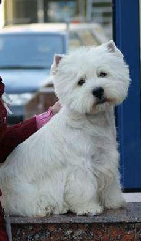

Стандарт породы вест хайленд уайт (вайт) терьер
Стандарт породы
Происхождение: Великобритания
Дата опубликования действующего стандарта: 24.06.1987
Применение: Терьер
Кклассификация F.C.I.: Группа 3 Терьеры
Секция 2 Малые терьеры
Без рабочих испытаний.
Ообщий вид: крепкое телосложение, широкая грудь и нижние ребра, ровная линия спины, мощная задняя часть на мускулистых лапах, отличное сочетание силы и активности.
Поведение и темперамент: живой, активный, смелый, обладает большим чувством собственного достоинства и самолюбием при шаловливой внешности. Настороженный, веселый, отважный, самоуверенный, но дружелюбный.
Голова: расстояние от затылка до глаз несколько больше, чем длина морды. Голова покрыта плотной шерстью, посажена под прямым или меньше углом к оси шеи. Собака не должна нести голову в вытянутом положении.
Черепной отдел
Череп: слегка выпуклый; при охватывании пальцами через лоб представляет собой ровную дугу. Слегка сужающийся по линии от ушей к глазам.
Переход от черепа к морде: выраженный; образуется тяжелым костяным выступом, слегка нависающим непосредственно над глазами, и небольшим углублением между глазами.
Лицевой отдел
Нос: черный, довольно крупный, образует плавный контур с остальной частью морды. Нос не выдается вперед.
Морда: морда постепенно сужается от глаз к концу морды. Не уплощается и не спадает быстро вниз ниже линии глаз, а образует хорошо сложенный подтянутый контур.
Челюсти/Зубы: челюсти мощные и ровные. Ширина между клыками достаточная, чтобы обеспечить хитрое/шаловливое выражение морды. Зубы крупные относительно размера собаки, имеет правильный ножницеобразный прикус, то есть верхние зубы плотно перекрывают нижние зубы и посажены под прямым углом к челюстям.
Глаза: широко поставленные, среднего размера, некруглые, темные насколько это возможно. Слегка утоплены, проницательные и умные, с пронизывающим взглядом из-под тяжелых бровей. Светлоокрашенные глаза крайне нежелательны.
Уши: Маленькие, прямостоячие, держит уверенно, остроконечные, посажены ни слишком широко, ни слишком узко. Короткая и мягкая (бархатистая) шерсть не должна состригаться. Бахрома по верхнему краю отсутствует. Округлые, широкие, большие или толстые уши или уши, обросшие большим количеством шерсти, крайне нежелательны.
Шея: достаточно длинная, чтобы обеспечить правильную посадку головы, мускулистая и постепенно утолщается к основанию, обеспечивая плавный переход в покатые плечи.
Корпус: компактный.
Спина: прямая.
Поясница: широкая и мощная.
Грудь: широкая, ребра хорошо изогнуты в верхней половине, представляют сглаженный вид по бокам. Задние ребра значительно углублены, расстояние от последнего ребра до задних конечностей настолько короткое, насколько это может обеспечить свободные движения корпуса.
Хвост: длиной 12,5-15 см, покрытый жесткой шерстью, без бахромы, прямой насколько возможно, держится гордо, но не излишне задорно и не загибается на спину. Длинный хвост нежелателен, но купирование хвоста недопустимо.
Конечности
Передние конечности: передние лапы короткие и мускулистые, прямые, покрыты густой короткой жесткой шерстью.
Плечи: имеют наклон назад, лопатка широкая и близко прилегает к грудной клетке. Плечевой сустав смещен вперед.
Локти: сдвинуты назад, позволяя передним лапам двигаться свободно параллельно оси корпуса.
Задние конечности: сильные, мускулистые, широкие в верхней части. Лапы короткие, мускулистые и жилистые.
Бедра: очень мускулистые и не слишком широко расставленные.
Скакательные суставы: изогнутые и расположены под корпусом таким образом, чтобы быть достаточно близко друг к другу во время движения или стояния. Прямы или слабые скакательные суставы крайне нежелательны.
Лапы: передние лапы больше, чем задние, округлые, пропорциональные по размеру, сильные, с толстыми подушечками, покрыты короткой жесткой шерстью. Задние лапы меньше, с толстыми подушечками. Нижняя поверхность подушечек и все когти предпочтительно черного окраса.
Походка/движения: свободная, прямая и легкая со всех сторон. Передние конечности свободно движутся вперед от плеча. Задние движутся свободно, мощно, близко друг к другу. Коленные и скакательные суставы хорошо сгибаются, скакательные суставы, подтягиваясь под корпус, обеспечивают сильный толчок вперед. Жесткое, неэластичное, ходульное движение задних конечностей и Х-образные конечности крайне нежелательны.
Шерстяной покров
Шерсть: двухслойная. Наружный слой состоит из жесткой шерсти длиной около 5 см, без каких-либо завитков. Подшерсток похож на мех, короткий, мягкий и плотный. Неприлегающая шерсть крайне нежелательна.
Окрас: белый.
Размер: высота в холке примерно 28 см.
Недостатки/пороки: Любое отклонение от вышеизложенных пунктов должно рассматриваться, как недостаток/порок. Серьезность, с которой должен оцениваться недостаток/порок, должна быть в точной зависимости от степени его проявления и влияния на здоровье и состояние собаки.
Любая собака, явно демонстрирующая физические или поведенческие отклонения, должна быть дисквалифицирована.
N.B. Кобели должны иметь два нормальных яичка, полностью опустившихся в мошонку.
Комментарии к стандарту Е. В. Сенашенко (Россия), эксперт FCI
Вест-хайленд-вайт терьер – не самая простая порода для экспертизы. Любого, кто захочет детально разобраться в особенностях экстерьера Вести, ждут неожиданности. Во-первых, эта порода триммингуемая, а это означает, что на первый взгляд собака может выглядеть совершенно иначе, чем она на самом деле сложена, поскольку искусный грумер сделает все, чтобы «отвести глаза» эксперту. Во-вторых, в этой породе немало различных типов, обладающих своим набором достоинств и недостатков, и поэтому перед экспертом зачастую стоит вопрос приоритетов, так как конкурирующие собаки могут обладать совершенно противоположным набором «плюсов» и «минусов».
Что же, попробуем разобраться поподробнее.
Прежде всего, начнем с общего вида. Вест-хайленд-вайт терьер – собака крепкая и коротконогая, но это вовсе не означает, что он должен напоминать массивного скотча с объемной грудной клеткой и очень низкого на ногах. При этом Вести также не должен быть плоским и вздернутым на ногах.
Последнее время возникает много споров об идеальном размере Вести. Согласно Английскому Стандарту, он составляет 11 дюймов (около 28 см), а Американский Стандарт оговаривает допустимый рост для сук еще меньше – 10 дюймов (25 см). Но, как показывает практика, судьи нередко считают «стандартных» собак излишне маленькими и отдают победу Вести ростом около 30 см в холке. Это, конечно, входит в противоречие со Стандартом, но поскольку эти собаки смотрятся очень эффектно, эксперты «западают» на них.
При экспертизе также следует иметь в виду, что высокопородная собака с очень коротким верхом может выглядеть меньше, чем она есть на самом деле. Поэтому очень компактный кобель стандартного размера некоторыми судьями воспринимается как «недостаточно мужественный», что, безусловно, неверно.
Стандарт не оговаривает вес вест-хайленда, но практика показывает, что крепкий кобель Вести весит около 8-9 кг, а сука-производительница в выставочной кондиции 7-8 кг.
Голова вест-хайленда представляет особую сложность при экспертизе, поскольку далеко не всякие судьи понимают, что такое «хорошая голова» Вести. Часто в описаниях как отечественных, так и зарубежных экспертов можно встретить слова – «отличная голова». Но на самом деле, это ни о чем не говорит. Что значит – отличная? Красивая стрижка? Или все-таки имеется в виду форма и ширина черепа, переход ото лба к морде, длина морды и ее заполненность под глазами, ширина нижней челюсти, постав и размер глаз, ушей? Увы, но нередко эксперт даже не представляет, что внутри пушистой хризантемы может скрываться узкий череп или легкая морда.
Правильная голова Вести широкая, череп слегка выпуклый, но не чрезмерно. Недостатком является голова в форме яблока. Надбровные дуги хорошо развиты. Переход ото лба к морде («стоп») должен быть хорошо выраженным. Если лоб несколько плосковат, то хорошего «стопа» не будет. Такой плоский лоб, как у шотландского терьера, обычно присутствует у Веста с излишне длинной мордой и узковатым черепом. Это возврат назад, к предкам. Но это вовсе не значит, что приветствуется «глубокий» стоп, и что переход ото лба к морде должен быть отвесным или череп должен нависать над мордой. При излишне выраженном «стопе» хорошие линии головы будут потеряны, а переход будет напоминать таковой у пойнтера или боксера, что совершенно неприемлемо для Вести. Но нельзя не отметить, что в последнее время стали модными «кукольные» сладкие мордашки с укороченными мордами и резко выраженным переходом.
Морда вест-хайленда короткая с сильными челюстями, зубы неожиданно крупные для собаки такого размера. Морда заметно короче черепной части. Иногда считают, что чем она короче, тем лучше. Это неверно. Собаки с очень коротким мордами, как правило, страдают недостатком зубов, так как зубам просто не хватает места. Но, в то же время, длинная морда, безусловно, нетипична для Вести. Согласно Стандарту, идеальная морда составляет около одной трети длины головы.
Мочка носа большая, образующая плавный контур с мордой. Выступающая мочка не характерна для Вести и обычно связана с длинной и узкой челюстью. Мочка интенсивно черная, хотя в зависимости от времени года ее цвет может меняться от темно-серого до темно-коричневого. Это так называемый «зимний нос», причина его возникновения – нехватка солнечного света зимой или нехватка витаминов и минералов в рационе.
Глаза находятся на одном уровне со «стопом». Постав глаз может многое сказать о форме и размере черепной части. Если голова имеет правильную форму, то глаза будут довольно широко расставлены. Если череп узок, то глаза будут слишком близко посажены. Глаза должны быть средними по размеру, миндалевидной формы, довольно глубоко посаженными. Большие, выпуклые глаза дают слишком мягкое выражение, присущее скорее кокеру или мопсу. Постав и форма глаз очень важны, поскольку от них зависит правильное выражение, когда взгляд Вести то становится проницательным и вопрошающим, то лучится весельем и радостью. Глаза должны быть как можно более темными. Светлые глаза очень нежелательны.
Уши вест-хайленда довольно маленькие, но не сами по себе, а в пропорции с головой и с собакой в целом, поскольку уши, которые выглядят правильно и сбалансированно на одной собаке, не будут так же хороши на другой. Уши представляют собой маленькие треугольники, выглядывающие из обильной шерсти на голове. Очень большие, толстые, широкие и неправильно поставленные уши портят даже хорошую голову и общее впечатление. Уши прямостоячие, но при этом они не должны быть похожи на уши скотч-терьера или выглядеть развешенными. Отлично, если угол между линиями, проходящими через кончики ушей и мочку носа, приблизительно 60°. Лобная часть достаточно широкая. Если череп слишком узкий, то даже при правильно посаженных ушах, создастся впечатление, что уши посажены близко. Одним из самых серьезных недостатков являются мягкие уши, которые качаются во время движения собаки. Темная пигментация на внутренней стороне ушей всегда приветствуется.
Что касается зубов, то на родине породы, в Англии обращают больше внимания на правильность прикуса и число резцов, чем на число моляров и премоляров. Резцов должно быть по шесть на каждой челюсти, прикус ножницеобразный. В Европе и Скандинавии допускается отсутствие не более четырех моляров или премоляров. Если отсутствует больше, то у собаки очень слабые шансы что-нибудь выиграть.
Если смотреть на вест-хайленда в профиль, то линия шеи от затылка плавно спускается вниз и плавно переходит в хорошо выраженную холку. Не должно быть излома при соединении шеи с холкой – это совершенно испортит линию верха терьера. При взгляде сбоку шея должна иметь грациозно изогнутый загривок. Для вест-хайленда характерен высокий выход шеи, что достигается особенностями строения скелета и зависит от угла плечелопаточного сочленения. Шея должна быть достаточно длинной, чтобы обеспечить гордую посадку головы, но она не должна быть очень длинной (лебединой). Слишком длинная шея так же плоха, как слишком короткая. Очень часто короткая шея свидетельствует о короткой, прямо поставленной лопатке. Но тонкая шея, резко переходящая в плоскую холку, также может быть результатом коротких, излишне отвесно поставленных лопаток. Хорошо сложенная собака с высоко поставленной шеей и хорошо развитой холкой всегда будет выглядеть как животное с длинной шеей по сравнению с собакой с невыраженной холкой и шеей одинаковой толщины по всей длине.
Наибольшее внимание при экспертизе Вести стоит уделять строению пояса передних конечностей, поскольку до 80% современных Вести не могут похвастаться корректным строением переда. Начнем с обсуждения углов плечелопаточного сочленения. У многих экспертов возникают трудности при оценке этих углов, поскольку строение передних конечностей определяется не так явно, как задних. В идеале лопатка должна быть хорошо наклонена назад, создавая основу для четко выраженной холки. Спрямленный угол плечелопаточного сочленения, возникающий в результате недостаточно наклонной лопатки, – серьезный дефект для терьера. Вест-хайлендов обычно триммингуют так, чтобы скрыть эти дефекты, но истинное положение лопатки можно определить на ощупь. Кроме того, все, что скрыто, проявляется в движении. Именно правильное расположение лопатки обеспечивает достаточную свободу движений и свободный вынос вперед передних конечностей.
Хорошо отведенная назад лопатка должна соединяться с плечевой костью под прямым углом так, чтобы плечевой сустав слегка выдавался вперед, а передние конечности располагались под корпусом собаки, обеспечивая длинный, правильный, свободный шаг.
Иногда собака, недостаточно правильно сложенная, может быть показана в очень эффектной экстерьерной стойке благодаря своему терьерскому темпераменту и грамотному грумингу. Но недостаточно высокий постав шеи и спрямленные углы плечелопаточного сочленения проявятся, как только она начнет двигаться. Впрочем, на успешный показ терьера в ринге его темперамент, живая настороженность и выставочный кураж могут оказать немалое влияние даже в движении.
Несколько слов хотелось бы сказать о правильном поставе передних конечностей. Здесь нет никаких неожиданностей и, как у большинства других пород собак, к недостаткам постава у Вести относятся нарушение параллельности, слишком близкий или слишком широкий постав, размет, косолапость, вывернутые локти. При взгляде спереди конечности должны быть поставлены строго параллельно, а в целом идеальный фронт Вести имеет, как говорят англичане, «форму бутылки шампанского». Размет или искривленные предплечья могут появиться вследствие плохого выращивания, но зачастую это признак наследственно предопределенный.
Корпус вест-хайленд-уайт терьера очень точно описан в Стандарте, остается лишь подчеркнуть, что вест-хайленд – самый компактный из всех коротконогих терьеров, что важно помнить при экспертизе. Из всех терьеров только Стандарт Вести имеет столько образное описание меры компактности – расстояние между последним ребром и задней частью настолько коротко, насколько это совместимо со свободными движениями.
Строение груди Вести довольно специфическое. Правильная глубина и ширина груди подчиняется правилу «золотой середины». Если грудь слишком широкая, то собака будет нетипична, так как по замыслу создателей породы, она не пролезет в узкие норы (хотя наши вест-хайленды уже много поколений этим не занимались, но Стандарт есть Стандарт!). Если грудь слишком узкая, то остается мало места для сердца и легких, что может привести к уменьшению жизненной силы. Обычно при правильной ширине груди между передними конечностями проходит ладонь.
Форма грудной клетки подобна форме сердца – ребра изогнуты в верхней части и довольно плоские по бокам. Как минимум, грудь должна достигать локтей и последние ребра также должны быть достаточно глубокими. В противном случае даже при правильном положении лопатки и корректном поставе хвоста короткие ребра сделают поясницу визуально более длинной, и будет создаваться впечатление, что собака имеет длинный верх.
Линия верха ровная, без переслежины (углубления за лопатками), без «завала на хвост» (углубления перед хвостом). Круп обязательно длинный и мускулистый. Если он скошен, то в целом изменяется строение пояса задних конечностей, тип и характер движений собаки. Укорочение крупа часто бывает связано с неправильным строением тазовой и крестцовой костей, а также с изменением угла их наклона. Строение задней части у Вести таково, что визуально «за хвостом должно быть еще немного собаки», как говорят англичане. К тому же, хорошо выраженные седалищные бугры подчеркивают высоко посаженный хвост.
Задние конечности вейст-хайленд-уайт терьера мощные, с широкими, мускулистыми бедрами, (иначе собака будет выглядеть уже и длиннее), хорошими углами сочленений (это обеспечивает сильный толчок при движении) и не слишком широко расставленные. Основной недостаток в строении задник конечностей – спрямленные углы в сочетании с длинными плюснами и, как результат, связанные, короткие движения. Но неправильным было бы считать, что у Вести должны быть очень сильно выраженные углы задних конечностей, как у американского кокера, и выявлять недостатки движений на размашистой, продолжительной рыси – это не характерно для породы.
В движении задние конечности Вести будут более сближенными в сравнении с широким поставом конечностей у других пород терьеров, таких как фокстерьер или эрдельтерьер. Сближенность конечностей никогда не следует путать со сближенными скакательными суставами.
Вест-хайленд от природы имеет недлинный (12,5-15 см), довольно толстенький высоко посаженный хвост, похожий на морковку, то есть толстый у основания и постепенно сужающийся к концу. Он никогда не купируется. Когда собака стоит в напряженной позе, кончик хвоста должен находиться на одном уровне с макушкой или быть слегка короче. Слишком длинный или слишком тонкий хвост считается недостатком. Длина хвоста очень часто коррелирует с длиной шеи, именно поэтому так редко встречаются собаки с длинной шеей и коротким хвостом. Хвост Вести – индикатор темперамента и настроения, он никогда не должен быть полуопущенным в движении или находиться между ног. Как истинный терьер, Вести несет хвост прямо, он может чуть наклонить его в сторону головы, но не заваливать на спину (беличий хвост).
Движения очень часто являются основным тестом при экспертизе. Конечности вест-хайленд-уайт-терьера двигаются прямолинейно, никуда не выворачиваясь. В действительности, ноги остаются параллельными только при движении шагом и медленной рысью – чем быстрее движется собака, тем больше конечности будут уходить под корпус для поддержания равновесия.
Залог хороших движений – правильные углы сочленений между плечевой костью и лопаткой, а также тазовой костью, бедром и голенью. Правильные углы сочленений увеличивают ширину вымаха конечностей и способствуют четкому ритму движения. Движения передних и задних конечностей скоординированы. При движении линия верха ровная.
Спрямленные углы сочленений укорачивают шаг. Если кости, стыкующиеся в плечелопаточном и тазобедренном суставах, поставлены почти отвесно и образуют сочленения с излишне развернутыми углами, – это сдерживает движение, укорачивая вынос вперед передних конечностей и ослабляя толчок задних. У собак с таким строением шаг короче, и они вынуждены делать большее количество шагов для покрытия того же расстояния. В результате их движения становятся несколько семенящими. Хотя если собака и имеет недостаточные углы как спереди, так и сзади, то она может выглядеть достаточно гармонично в движении.
Шерстный покров состоит из мягкого подшерстка и более длинного, жесткого и густого покровного волоса. Длина покровного волоса на шее и корпусе около 5 см, он прямой, без всяких признаков курчавости. Жесткая шерсть редко бывает вьющейся, хотя иногда она имеет легкую волнистость. Окрас белый. В стандарте не указываются отклонения по цвету, но многие собаки, в том числе и чемпионы, имеют шерсть не чисто белую, а с кремовым оттенком. Шерсть на голове и конечностях длиннее, а на голове мягче, чем по корпусу, но она не должна быть пухлявой или напоминать вату. В любом случае, собака с правильной жесткой шерстью, имеющая желтоватый оттенок, всегда предпочтительнее, чем собака с мягкой, обильной шерстью чисто-белого окраса. Крайне нежелательная отрытая рубашка, то есть топорщащаяся шерсть, практически без подшерстка.
материал эксперта FCI
Екатерины Васильевны Сенашенко
Комментарии к стандарту Э. Хвалибог (Польша), эксперт FCI
Стандарт вести в полной мере и исчерпывающе описывает признаки породы. Будучи написанным для экспертов и заводчиков, может быть не столь доступен для простого любителя. Я постараюсь описать комментарии к нему более сжато, добавить некоторые детали, которые можно узнать, непосредственно обратившись к первоисточнику.
Общий вид
О классе этого маленького белого терьера невозможно судить, имея в виду только великолепную, специфическую прическу. Надо обследовать то, что скрывается под шерстью. Вести – это маленький охотничий пёс с хорошим анатомическим строением тела, мощный, крепкий и подвижный, обладающий крепким здоровьем.
Он не является столь коротколапым, как его кузен – скотч, и не такой эластичный и гибкий, как его ближайший родственник – керн, которого он больше напоминает. Хороший вести не должен быть длиннолапым или очень приземистым. В этой породе должна быть четко выражена половая принадлежность, не зависящая от размера собак: может быть небольшого роста кобель – в кобелином типе, и крупная сука – с выразительными женскими чертами.
Характер
В вести скрывается два характера. Милая и весёлая белая лапочка может в мгновение ока перевоплотиться в агрессивного атакующего терьера, применить свои грозные зубы для расправы с соседским котом или собакой. Упрямый, самонадеянный, с ярко выраженным темпераментом, с хорошим чутьём и громким лаем. (Работа под землёй заключалась в ритмичном, громком лае, чтобы владелец мог определить, в каком месте находится живность.) Может заняться «перекапыванием» клумб, любит играть с детьми, очень ловок, что делает его любимцем всех домочадцев.
Голова
Выражение сосредоточенности, высоко поставленная, пропорциональна величине собаки. Специфическая стрижка придает массивности, круглая и наполненная. Морда объёмная, с хорошей наполненностью под глазами, немного короче черепной части (3:5), которая слегка округлена, между ушей широкая, хорошо выражен стоп. Ни в коем случае голова веста не должна напоминать голову белого скотча, с длинной мордой, узкой в черепной части, плоской, со слабо выраженным стопом. Линии головы и морды должны быть параллельными, не должно быть вздернутого или опущенного носа, длинная морда является большим недостатком в породе. Иногда встречаются головы с яблоковидным черепом и укороченной мордой. Такие собаки часто имеют выпуклые глаза и неправильно расположенные зубы. Яблоковидные головы больше присущи миниатюрным особям, с мелким костяком, которым очень далеко до охотничьего терьера. При первоначальном осмотре головы первое, что бросается в глаза – это оброслость. Если шерсть редкая, очень жесткая или слишком мягкая, то не помогут любые ухищрения парикмахера. Голова не будет иметь должного выражения, а контур гривы будет нечётким, тогда морда будет выглядеть более длинной и потеряется «шельмоватое» выражение, присущее данной породе. Встречаются иногда такие головы, которые в принципе не надо сильно отчёсывать, собака отряхивается и лоб становится ещё более настороженным и внимательным. Наиболее округлые лбы имеют собаки со слегка мягковатой шерстью, они более выигрышно смотрятся и наиболее востребованы.
Морда, обросшая торчащей шерстью, кажется ещё короче, чем на самом деле. Мочка носа напоминает чёрную как уголь пуговичку, несколько выступающую из снежного шара, пигментация носа часто становится большой проблемой для заводчиков.
Бывает, что нос тёмно-серый, коричневый, тёмно-розовый, а иногда просто не полностью запигментирован. Летом нос темнеет, зимой, из-за отсутствия солнца, светлеет и весной опять приобретает чёрный цвет. Существует даже такое понятие среди разведенцев, как «зимний нос» (winter nose). На интенсивность пигментации также может влиять изменение гормонального фона. Суки перед течкой, во время беременности или сразу после родов, после гормональных инъекций часто имеют «печёночный» цвет носа, недостаток пигментации считается очень серьёзным недостатком.
Правильный Прикус и полный комплект зубов не часто встречается у вести. Не ради зубов англичане выводили эту породу! В старой версии стандарта ещё можно встретить требование к комплекту резцов, сегодня пересчет зубов – пережиток прошлого. Так сложилось, что этот охотничий пес имеет не совсем правильную зубную систему и эксперты в большей мере предъявляют требования к наличию премоляров.
Этих дефектов становится теперь всё больше, так как заводчики ставят себе в первую очередь цель на укорачивание длины морды, что в свою очередь приводит к дефектам зубной системы. В Германии допускается отсутствие 4 премоляров и уже превышение этой нормы влияет на оценку. Более строгий подход к прикусу. Хотя в стандарте сказано о ножницевидном прикусе, обычно проходит и клещевидный. Окончание морды должно напоминать букву U, но ни в коем случае не V, расстояние между клыками должно быть значительным, а расположение резцов напоминать форму правильной дуги, для небольшой собаки вест имеет довольно крепкие зубы. Из разведения исключаются собаки с недокусом, перекусом и так называемым открытым прикусом, когда центральные резцы маленькие и разной длины, что приводит к тому, что у собаки при закрытой пасти может выглядывать язык. Также у вестов встречается слегка поданная назад нижняя челюсть, что придаёт им «скотчий вид».
Глаза Вести оцениваются по сумме четырёх пунктов: выражение, цвет, форма, расположение. Взгляд интеллигентный и внимательный. Кажется, что эта очаровашка хочет о чём-то нас спросить. Правильный глаз не должен быть округлым и очень большим. К сожалению, такие глаза встречаются всё чаще, и тогда собака, как пишут некоторые, имеет «придурковатый вид». Миндалевидный глаз гораздо лучше, но также не идеальный, он слишком прикрытый, хорошо, если он будет небольшого размера. Глаз правильного строения – чёрная пуговка, обрамлённая как уголь, встречается очень редко. Часто веки бывают каштанового и даже жёлтого, при внимательном рассмотрении некрасиво-розового цвета. Чёрные глаза прекрасно контрастируют с белоснежной шерстью вести, допускаются тёмно-ореховые, но светлые янтарные глаза являются уже серьёзным недостатком. Если голова узкая, то глаза будут казаться близко посаженными, что меняет породное выражение. Если черепная часть объёмная и достаточно широкая, то глаза чаще всего тоже будут правильными. Они кажутся глубоко посаженными, когда над ними находятся чётко выраженные надбровные дуги (такое строение помогало норнику уберечь глаза от хищников). У миниатюрных экземпляров встречаются округлые, выпуклые, совершенно нетипичные глаза.
Уши должны быть небольшие, заострённые на концах, слегка видные из-под причёски, направленные вперёд. Большие, сдвинутые назад, оптически удлиняют голову. Слишком широко посаженные, слишком узко посаженные, сближенные между собой, такие уши не могут быть характерными. Если провести линию от кончика носа через середину глаза, то в конце неё должен находиться кончик уха. Если сравнивать расположение ушей со стрелками часов, то 10.10 – правильно расположенные уши, 11 .05 – слишком сближенные, напоминающие уши шотландского терьера, 9.15 – напоминают уши мула. При узкой черепной части уши, равно как и глаза, кажутся близко посаженными. Постав ушей при осмотре должен выглядеть широким, но никогда удлиненным и высоким. Хрящ должен быть тонким, толстая раковина часто имеет закругленную, бабочковидную форму кончиков ушей. Внутренняя часть уха должна быть как можно сильнее пигментирована. Темная пигментация является большим достоинством веста. Маленькие, обросшие шерстью уши норного терьера были более защищены от атак хищников, густой торчащий волос в середине ушей не позволял проникать песку в середину уха, когда тот копался под землей. Рассматривая глаза и уши веста, можно много рассказать о его настроении и характере.
Шея вести должна быть хорошей длины. Выглядит тонкой в контрасте со специфичной прической головы. Голова выглядит оптически больше, напоминает белый меховой шар. Шея должна быть выдержана в стройных линиях, которые должны придать ей аристократичности и утонченности. Однако шея не должна напоминать яблоко, насаженное на булавку, также и лебединая шея нетипична для этой породы. В свою очередь, шея не должна быть короткой, бычьей, хотя в то же время предпочтение отдается крепкой, с хорошим выходом шее и длинной лопатке. Высоко поставленная округлая голова придает собаке элегантность, ее постав к оси шеи под прямым углом.
Туловище
Наиболее подходящее слово – собранное. Должно быть коротким, крепким, глубокая грудная клетка не должна быть плоской, но и не быть бочкообразной, ее поперечный разрез должен быть сердцевидный. Чрезмерно глубокая и широкая грудная клетка препятствовала бы работе вести в норе. Расстояние от земли до локтя у вести должно быть такое же, как и от локтя до линии холки. Длинная, узкая и выпуклая поясница, часто встречающаяся на рингах, в действительности должна быть широкой, короткой и прямой, как в стойке, так и в движении. Вести со слишком укороченным корпусом встречается реже, обычно он имеет скованные движения и короткий шаг.
Хвост
Стандарт характеризует две его черты: способ ношения и длину. На практике размер хвоста составляет 13-15 см, но его размеры зависят от размеров корпуса, он должен выглядеть гармонично относительно всего тела. Заводчики и эксперты предпочитают короткие хвосты, однако слишком уж короткий хвост тоже не хорошо. Операции по устранению дефектов хвоста, при обнаружении экспертом, влекут за собой дисквалификацию. Хвост можно назвать барометром собаки. Уверенный в себе, весёлый пёс носит его высоко, и хотелось бы видеть его как можно прямее. Порочным является часто встречающийся низко посаженный хвост, что тесно связано со строением задней части и задних конечностей. Корпус нашего вести не должен заканчиваться на внутренней стороне хвоста, при осмотре сзади мы должны увидеть еще и выразительные седалищные бугры. Как кто-то сказал: «Хвост в виде морковки должен быть горизонтально посажен как можно ближе к шее, а не находиться за собакой». Если смотреть сбоку, то кончик хвоста не должен быть выше верхней точки черепа. Иногда в ринге наш вести может немного опустить хвост, но его кончик не должен касаться позвоночника. Эксперты отдают предпочтение изогнутому в сторону спины хвосту, чем вялому и опущенному, что говорит о неуверенности и об отсутствии темперамента собаки. Не приветствуются также тонкие хвосты, часто встречающиеся у легкокостных собак, и обычно они бывают слишком длинные.
Передние конечности
Длинная косая лопатка – черта, характеризующая класс собаки. Если её расположение и размер не соответствуют стандарту, то это повлечёт за собой перечень других дефектов: шея кажется короткой, холка низкой, а спина слишком длинной, движения передних конечностей короткие и семенящие. Вид спереди должен быть изящным и, как пишут знатоки породы, должен напоминать бутылку «шампанского, а не «пива». Локти не должны быть втиснуты под туловище, но не должны быть и вывернугы, что встречается чаще. Вид спереди в виде бутылки «шампанского», к сожалению, встречается редко, мышцы плеча должны быть плоскими и не должны выпирать. Фронт вести оценивается не так, как у скотча, он более узкий. Отличает эти породы длина конечностей и костистость. Вести не должен иметь массивные и слишком короткие ноги, говорится, что он должен иметь больше воздуха под брюхом, чем скотч. Если передние конечности кажутся укороченными – это может говорить о несоответствии стрижки, то есть оставлено слишком много шерсти на груди, эта часть тела тогда кажется цилиндрической и скованной. При осмотре передних конечностей не должно быть обнаружено никакой кривизны. Старый стандарт допускал «французское предплечье» (свободные локти), об этом есть упоминание и в американском стандарте. Это не слишком выраженный недостаток, встречается довольно часто, более резко выраженный – считается порочным. Заводчики объясняют это тем, что собака, копая в норе, расгребала землю в стороны, а не под себя, чем блокировала бы себе выход.
Задние конечности в значительной мере говорят о классе собаки. Мощная, прямая мускулатура бёдер, хорошая длина бедра и голени, хорошие углы коленных и скакательных суставов – эти признаки задних конечностей в большом почете у заводчиков. Чрезмерные, порочные, выпуклые бёдра тесно связаны с прямыми задними конечностями, это, в свою очередь, приводит к семенящему шагу. Неправильный постав эксперт может легко определить, достаточно поднять вести вверх, на несколько сантиметров и отпустить. Конечности должны встать параллельно и широко, их постав не должен быть, как, например, у скотча, «бочкообразным», узкий и сближенный постав, так называемый «коровий», не допустим. Скакательный сустав находится недалеко от земли, также для породы характерно исключительно сильное бедро. В стандарте акцентируют внимание на то, что скакательный сустав должен находиться под корпусом. На выставках часто можно увидеть, что задние конечности излишне отодвинуты, этим приемом хзндлер старается подчеркнуть выраженность линии верха вести и визуально поясница смотрится короче. Собака с прямыми задними конечностями при искусственной стойке пытается поставить задние конечности в удобное для себя положение и вернуть лапы под корпус.
Лапы должны быть кошачьими, т.е. собранными, закругленными и мощными. Кажется, что собака стоит на пальцах. Распущенная, плоская лапа, часто встречающаяся у скотча, редко встречается у вести. Когти у всех норников с большим запасом прочности и должны сами стираться во время бега, длинные когти не только плохо влияют на внешний вид, но также и на движения, от этого лапы будут слегка выворачиваться наружу. В идеале когти не должны касаться земли. Так же, как и у щенков, подушечки и когти темнеют с возрастом, так и у взрослых собак когти могут светлеть.
Движения
Бегать вести должен свободно, быть выносливым, как и его предки, которые бегали по пересеченной местности между скал и зарослей терновника, сопровождая своего хозяина с утра до вечера, движения не должны быть скованными, семенящими, на прямых конечностях, а должны напоминать слегка замедленный фильм, свободно выбрасывающий шаг, энергично далеко отталкивающий тело вперед и скакательные суставы должны распрямляться в движении, однако, мы не требуем от вести движений немецкой овчарки. Передние конечности должны свободно двигаться, напоминая маятник, параллельно относительно друг друга, плотно прилегая к грудной клетке. Задние, с хорошими мышцами, при ускоренном шаге могут иметь тенденцию к некоторой сближенности. Вести бежит, держа голову кверху, линия верха становится параллельной земле, спина не болтается.
Шерсть
Это один из пунктов стандарта, который вызывает противоречия.
Она бывает двух видов: густая, чуть ли не проволока, и мягкая, волнистая внутренняя – подшерсток, защищающий белого охотничьего терьера от ветра и непогоды. Подшерсток то прибывает, то убывает, в зависимости от погодных условий. Бывает, что наш пёс имеет слишком мало подшерстка, такая шерсть называется открытой и трудно поддается моделированию. Стандарт не указывает, в каких местах шерсть должна быть длиною 5 см. Обычно на корпусе шерсть триммингуется короче, а на голове и конечности должна быть длиннее. Остевой волос, покрывающий корпус, должен быть жестким и прямым. На таком прямом и скользком волосе не держится грязь, после высыхания достаточно несколько движений щёткой, чтобы наша собака была опять белой. Ухаживать за вести с мягкой шерстью, которых сейчас становится все больше, очень хлопотно. В городских условиях такая собака в конце дня становится грязной. Известная французская заводчица Katharina Round пишет: «Не дай бог нам прийти к белой пушистой мягковолосой игрушке», и «. . .когда пробуем сдобу, то важен вкус, а не украшение...». Шерсть однородной структуры, мягкая, ватная, волнистая, торчащая или слишком закрученная — такую шерсть опытные парикмахеры триммингуют очень коротко, для того чтобы скрыть данный недостаток, тогда корпус вести кажется маленьким, с шеей, как стебелёк, на котором колышется хризантема – голова выглядит гротескно. К тому же эти полуголые собачки, обработанные лаком после пудры и снова лаком, с искусственно сделанной твердой шерстью, выглядят как бы панированными. Само название породы вести подразумевает то, что он должен быть белым, но без углубления в историю происхождения породы мы не можем это понять. От своих предков, кернов и скотчей, определённая часть вести имеет кремовый оттенок шерсти, желтоватый налёт или бежевую тигровость, которая тянется вдоль позвоночника и доходит до наружной части ушей. Так получается, что затемненная шерсть, как правило, более жесткая и прямая, но к выставке стараются такую шерсть отбелить. На ринге при сравнении белоснежного, мягкошёрстного вести и закрашенного с более жёсткой шерстью, эксперт отдает предпочтение в пользу последнего. Это не означает, что все жёсткошерстные собаки имеют шерсть только с оттенком. Есть много белоснежных, с великолепной правильной шерстью собак, которые должны быть высоко оценены. Образ идеального вести не будет полным, если не вспомнить о его скрытой части – пигментации. Действительно, слабопигментированные собаки с розовой поросячьей кожей стали обыденностью. У белоокрашенных животных, которым со временем может грозить глухота или слепота, пигментация не может быть мелким недостатком, недостойным внимания. У идеального вести нос, веки, губы, небо, подушечки пальцев и когти – черные. Так же как и на животе, и внутри ушей кожа должна быть темнее, часто бывает интенсивно серо-графитовая.
Размер и вес
Стандартный рост 28 см. Существует один неписанный закон между экспертами, допускается отклонения от стандартного роста около 1 дюйма или 2,5 см. Этих рамок нетрудно придерживаться и заводчики стараются соблюдать эти нормы. Рост чемпионов колеблется около 26 см, но большинство особей приближается к 31 см. Когда-то нижняя граница стандарта для вести была 20 см в холке. И сегодня есть любители таких миниатюрных собак, которых нельзя уже отнести к выставочным, а любовь к ним носит черты ностальгии по былому. Относительно веса. Собака с эталонным ростом 28 см должна весить от 7 до 9 кг, с правильным весом сука – около 7 кг.
Материапл эксперта FCI Э. Хвалибог,
перевод с польского – В.А. Кравец